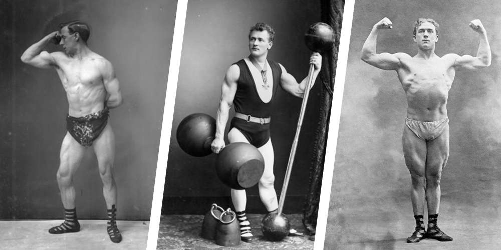

GymHistoria
Hem

2500 år av träning
UPPDATERAD 3 MARS 2014PUBLICERAD 24 FEBRUARI 2014
Det som anses vara bra träning idag, har mer gemensamt med träningen under antiken, än någon annan tidsperiod,
enligt svensk idrottsfysiolog.
Idag är träning och motion en stor del av många människors liv. Överallt påminns vi om hur viktigt det är att
träna och röra på sig. Men har du någonsin funderat över hur det här med träning egentligen uppstod?
Enligt Michail Tonkonogi, professor i idrottsfysiologi, vid Högskolan Dalarna finns det två teorier om hur det
hela började:
– Det finns en lekteori som utgår ifrån att människor tycker om att leka, och när man jagar sedan vill man leka
jakt, och sedan upptäckte man att ju mer man jagade desto bättre jägare blev man.
Den andra teorin kring hur träning uppstod utgår ifrån att magi låg till grunden. Under magiska ritualer
imiterades jaktrörelserna, och ju mer man imiterade sina rörelser desto bättre blev man på jakten:
– Det finns mycket som talar för magiteorin eftersom många idrottsliga aktiviteter har många kopplingar till
religiösa riter; De olympiska spelen till exempel var en högtid för att hylla Zeus, säger Michail Tonkonogi.
Olympiska spel startskott
Vi människor har troligen tränat för jakt och senare strid ända sen stenåldern. Det kan man förutsätta efter att
ha studerat äldre grottmålningar och arkeologiska utgrävningar.
Men den organiserade formen av träning som vi menar med träning, går hand i hand med idrottens historia och
började troligen i antika Grekland. Där blev tävlingsidrotterna populära och slog igenom i och med de Olympiska
spelens intåg på 700-talet före Kristus.
Enligt Michail Tonkonogi är det slående hur mycket de gamla grekerna visste om träning. Det avslöjar bland annat
legenden om brottaren Milon från Kroton – en sexfaldig OS-mästare under antiken. När Milon var pojke par han en
liten tjurkalv på axlarna, och kalven växte och blev till en stor tjur, och samtidigt växte styrkan hos Milon.
– De förstod alltså att du måste överbelasta musklerna. De visste också att man ska periodisera sin träning. Man
tränade i så kallade tetrader; första dan med medelstor belastning, andra dagen hög belastning, tredje dagen
vila fjärde dagen liten belastning. Det som vi idag kallar för vågformighet i belastningen och tror är något
mycket modernt, det visste de redan under antika Grekland, säger Michail Tonkonogi.
Gymnasion & Paleastra
Träning var en stor del av samhället under antiken – varje stad och helgedom hade en träningsanläggning, som
kallades för gymnasion – och inne på gymnasiet fanns ”paleastran”, ett separat område där man brottades och
boxades.
Alla fria män, alltså de män som inte var slavar, hade tillgång till antikens gym.
Det är svårt att veta exakt hur exakt vad och hur man tränade under antiken – men på gamla tavlor och vaser kan
man idag utröna en del av det som skedde – Och arkeologerna har också hittat gamla stenhantlar – som troligen
både användes för vanlig styrketräning, men också som häveffekt när de olympiska atleterna tävlade i längdhopp.
Redan förr var det bättre förr
Skriftliga källor uppger också att man redan på 400-talet f.Kr. började klaga över att idrottsmän var bra i sin
egen idrott men inte passar till något annat till skillnad från forna tiders dugliga idrottsmän.
En av de få skriftkällorna är från författaren Filostratos (ca 170 e.Kr.) som skrev verket Gymnastike.
Filostratos skrev att allt var bättre förr, då man genom sitt dagliga värv, böjde eller rätade ut järn,
brottades med tjurar, sprang i kapp med hästar eller harar.
När idrottstävlingarna blev så vanliga att idrottsmännen blev professionella tävlande blev tränandet målmedvetet
och tänka för mycket på vad man stoppade i sig. Ungefär som idag alltså.
Träningen under antiken fick ett abrupt slut i och med att Rom hade kristnats under 390-talet efter Kristus. De
nakna aktiviteter som pågick på gymnasiet och paleastran ansågs oanständiga och förbjöds då av de romerska
kejsarna.
Vikingar & Medeltid
Efter den antika idrottens glansdagar, och västvärlden kristnades, ansågs länge själen vara viktigare än kroppen
– och träning och idrott fick mindre betydelse i samhället under medeltiden.
Men på 800-talet här i Norden höll vikingarna på med träning i olika former, främst brottning och olika
kampgrenar. De så kallade vikingalekarna utövades främst av hövdingafamiljer och andra mer uppsatta i
vikingasamhället,
Men efter att också Norden kristnats – under resten av medeltiden – så var träningen troligen en lyxvara för ett
fåtal präster och riddare.
1600-tals Excertitier
Under renässansen uppstod Ett hovmannaideal som började i Italien och spred sig till övriga västvärlden. Det var
en tid då adeln skulle skaffa sig ädla ideal, träna både kroppen och knoppen och förtjäna sina adliga
privilegier.
I mitten av 1600-talet införde Gustav den andre Adolf en ny form av träning – de så kallade extertiterina –
vilket betyder övning – vid universiteten i Lund, Åbo och här i Uppsala.
– På den tiden låg det en särskild excertitiegård här i Uppsala där man kunde både fäkta rida, där man dansade,
och det handlade om att förstås behärska sin kropp, säger Lars Burman.
Det antika träningsidelaet var på väg tillbaka – renässansen blev också en träningens pånyttfödelse. Det
gammellatinska ordspråket ”Mens sana in corpore sanu”! ”en sund själ i en sund kropp” blev de nya ledorden.
Men det var ingen snabb återhämtning direkt. I mitten av 1600-talet gick det ungefär 1000 studenter vid Uppsala
Univeristet, varav ett par dussin höll på med excertitier.
Träning för få
Träning, under 16-1700-talen, var fortfarande få förunnad, de flesta hade troligen fullt upp med sitt dagliga
slit för brödfödan.
För adeln blev träningen ett sätt att leva upp till sin priviligierade ställning i samhället, snarare än att
förbättra den personliga hälsan eller att få en vältränad, muskellös kropp för utseendets skull, som ofta är
träningens mål idag.
– Det var inte bara för sin egen del att man skulle känna sig frisk, man var en medborgare i staten och då var
det plikt förstås att ha en kropp som fungerade för det man var ämnad till. Jag tror inte man har samma
inställning idag till träning, säger Lars Burman.
Vanligt folk börjar träna
Under 1800-talets början fortsatte träningen att utvecklas i takt med att samhället ändrade på sig.
Industrialiseringen ledde fram till en omfördelning av människor från jordbruk till industri, från landsbygd
till stad.
Och då började även vanligt folk träna, enligt Leif Yttergren, docent i idrottshistoria, vid Gymnastik och
idrottshögskolan i Stockholm:
– Man kan se det som en motreaktion mot industrialiseringen, urbaniseringen, civiliseringen, folk blev oroade
för sin hälsa, så den tidiga idrotten var en ren hälsorörelse, det handlade inte så mycket om prestation och
tävling, utan man skulle få bättre hälsa.
Under den här tiden, för exakt 200 år sen, så grundade den svenska gymnastikens fader Per Henrik Ling grundade
Gymnastik och idrottshögskolan – som på den tiden kallades för Gymnastiska Centralinstitutet (GCI).
Allisdig Linggymnastik
Enligt Leif Yttergren innebar Linggymnastiken att man tränade allsidigt och att man undvek överansträngning.
– Det rådde en helhetssyn på träning i Sverige; man brydde sig om stilen, tekniken, konditionen, det mentala och
om kosten. Men på 40-50 talet blir det en vetenskapifiering av idrotten som blir intressant för forskare att ta
del av, säger Leif Yttergren.
I mitten av 1900-talet hamnade allt fokus på konditionen som var mätbart, enligt Leif Yttergren:
– Det där började yttra sig för vanligt folk, genom att man började anlägga fullt med motionsspår överallt, för
att träna just konditionen.
Enligt Leif Yttergren är idrottslig framgång oerhört komplex, så det räcker inte bara med kondition. Från 40-50
talet har det varit en kamp mellan erfarenhetsbeprövad träning, som byggde mycket på att man observerade det som
funkade bäst, och vetenskapen med sina laboratorietester. Och idag har vetenskapen vunnit.
Är det för mycket fokus på den vetenskapliga delen?
– Det tycker jag nog. Men det är en svår fråga – vill vi ha medaljer behöver vi bra forskning, men vill vi har
forskning breddad mot hälsa behöver vi inte det, i alla fall inte på det sätt som bedrivs idag, säger Leif
Yttergren.
Från lek till idrottslabb
På Högskolan Dalarna i Falun ligger Sveriges mest avancerade idrottslabb. Idrottsfysiolog Michail Tonkonogi
utförde nyligen tester på elitcyklister och kom fram till att högintensiva och korta träningsintervaller under
bara trettio sekunder gav bättre effekt i musklerna än intervaller som pågick i 20 minuter åt gången.
Han menar att dagens forskningsrön om att träna kort och intensivt, påminner mer om antikens träning för två och
ett halvt tusen år sen, än den träningen som pågick för 400 år sen – eller för bara 50 år sen:
– Ja vi har definitivt mer gemensamt med antika Grekland och även diskussionerna som fördes då var liknande, då
det diskuterades överträning och så vidare.
Och vad kan man dra för slutsats av det?
– Inget är nytt under solen! Men riktigt så är det inte, vi har ett mycket intressant arv att titta tillbaka på,
men utvecklingen idag går mycket snabbare, det som de kände på sig under antiken, får vi idag molekylära svar
på, varför det är så, säger Michail Tonkonogi.
Vetenskapen om träning – Vetenskapens värld 24/2 20.00 i SVT2. Dessutom: Chatta med träningsexperterna efter
programmet här på SVT.se klockan 21.